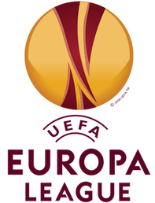

Wat is voetbal?
Voetbal is een populaire balsport waarbij twee teams van elk elf spelers moeten proberen de bal in het doel van de tegenstander te krijgen. De bal mag met ieder deel van het lichaam gespeeld worden, behalve met de armen en handen. Er wordt vooral met de voet gespeeld en met het hoofd gekopt. Ook moet de bal altijd speelbaar blijven en mag deze niet afgeklemd worden door bijvoorbeeld op de bal te gaan liggen of tussen de benen te klemmen. Dit geldt niet voor de doelverdediger, ook wel keeper genoemd.
Geschiedenis van voetbal
Algemeen wordt aangenomen dat de moderne vorm van voetbal ontstaan is in het Verenigd Koninkrijk, misschien in Engeland. Hier is ook de oudste professionele voetbalclub ter wereld opgericht, Notts County FC. Internationaal ontstonden de Fédération Internationale de Football Association (FIFA) in 1904 en de Union of European Football Associations (UEFA) in 1954 waarvan de laatstgenoemde de wedstrijden om de Champions League en de Europa League organiseert.
De eerste vereniging in Nederland was de Koninklijke HFC, origineel opgericht als rugbyclub door Pim Mulier (1879), die eveneens op 8 december 1889 op zijn initiatief de Nederlandse Atletiek en Voetbalbond oprichtte (deze heet sinds 1929 KNVB). Het veld van HFC, de Koekamp, waar hun “worstelperk” gelegen lag, was niet egaal en in het midden van het veld stonden een paar bomen, maar dat deerde hen niet. Men speelde eromheen of maakte er gewoon gebruik van. Later werd overgeschakeld op association, het huidige voetbal. Mulier schreef hierover: "De eerste jaarrekeningen maakten aan ons rugbyspel een einde. De diverse papa's en mama's vroegen toelichtingen op die rekeningen. Vermoedelijk hebben we in goed Haarlemsch geantwoord: Ja pa, asse je grijpe, magge se je grijpe, waar se maar kenne. (...)Dies werd het rugby ten doode opgeschreven en gingen we in het jaar 1883 over tot association." In 1954 werd het betaalde voetbal (semi-prof.) ingevoerd.
Competitie
Het Nederlandse voetbal kent op profniveau (betaald voetbal) het landelijke divisiesysteem. De hoogste klasse is de Eredivisie, daaronder volgt de Eerste divisie. In de eredivisie wordt gestreden om het nationaal kampioenschap, door de media landskampioenschap genoemd; daarnaast wordt er gestreden om enkele plaatsen voor Europees voetbal. Dit bestaat uit de Champions League (Europees kampioenschap voor voetbalclubs) en de Europa League (voorheen UEFA Cup).
 De plaatsen worden aangewezen door middel van het systeem van de UEFA-coëfficiënten.
Daarnaast is er de KNVB beker. Ook het winnen van deze beker geeft recht op deelname aan het Europa League-toernooi. Nederland heeft nu recht op 1 rechtstreekse plaatsing voor de Champions League en een plaats in de voorronde van deze competitie.
Daarnaast heeft Nederland nog recht op 4 startbewijzen (3 in het seizoen 2010/2011 voor het seizoen 2011/2012) voor de Europa League.
In de eerste divisie wordt gestreden om promotie en degradatie. De kampioen promoveert rechtstreeks naar de eredivisie ter vervanging van de nummer 18, die dus rechtstreeks degradeert. De nummers 16 en 17 van de eredivisie strijden met de nummers 2, 3 en de 4 periodekampioenen van de eerste divisie om twee plaatsen in de eredivisie. Dit deden zij tot en met 2005 in de nacompetitie. Vanaf het seizoen 2005/2006 gebeurt dit in de promotie-/degradatieplay-offs. De nummer 18 (de laatste) in de eerste divisie degradeert als een van de twee clubs uit de lagere amateurdivisie, de Tweede divisie met recht op promotie wilt promoveren naar de eerste divisie. De nummer 18 degradeert niet als geen van beide Topklasse-clubs wilt promoveren.